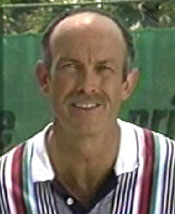

The Attacking Volley
Mechanics and tactics of the attacking volley — approach, contact, and finish.
The Attacking Volley
Dr. Jack Groppel
What do you need to develop an attacking volley?
To hit a great attacking volley, a player needs two things. The first is great footwork. The second is very simple upper body movement. The biggest problem most players have is that their upper body movement, and especially their arm action, is far too complex.
Let's look first at the footwork. Whether you serve and volley or hit an approach shot and then go in, you must take a split step. Some teaching professionals hold the opposite opinion, that you don't need a split step. That's correct only under certain circumstances. If you hit the ball so well that you know the opponent's return is going to be very weak, you can just "rush and crush." But that's dangerous if your opponent is able to set up for a pass or can hit a lob. For the majority of situations you face in your matches, that philosophy will do more harm than good.
The split step: getting rapidly in and out of a balanced hop.
To go into the split step, you simply go into a balanced hop. This means that you don't go very high above the ground. You literally hop with both feet parallel, landing in a ready position with your feet about twice shoulder width, or even a little wider.
Too many players literally stop all forward motion when they split. If you stop completely, your body will have too much inertia and you won't be able to explode to the volley. The way to perform a split step properly is to go into the balanced hop, land, and get out.
The way you time this is to land just as the opponent begins the forward swing and makes contact with the ball. So when the opponent begins the forward swing, you're into the split step maneuver, and you land at about the opponent's contact point.
When you land, pretend that the court is a hot plate or a stove. You wouldn't stay in contact with a hot stove very long, would you? That's exactly the thought I want you to have when you do the split step. You're in it and you're out of it immediately. You land, you read, react, and get out. That's very important.
After the split, a step with the outside foot and a step into the Shot.
So what happens next? As Peter Smith explains in his excellent article on the two-step volley (Click Here), it's a combination of a step with the outside foot and a step forward into the shot. The size and the direction of the first step will depend on where you are in relation to the oncoming ball. It can be a pivot, a sideways step, a lunge step, or a reverse step, something that I demonstrated in my first article. (Click Here.)
As Peter points out, the first step should position you on balance behind the ball. On many balls you will see the top players use a more advanced version of the split step that allows them to actually start the first step sooner, just before coming down on the court. That is an advanced option that should evolve naturally once you understand the concept of the basic split.
The second step takes you forward toward the contact. In most cases you will initiate the swing and make contact before the second step is actually on the court. The sequence is: "step, hit, land." Even if the front foot is in the air at contact, the step has moved your momentum forward into the shot.
The shoulder turn and the hand positions the racket head.
Backswing
Now let's take a look at the arm movement and see how to make it as simple as possible. This starts with the backswing. Far too many players take an independent backswing with the arm. In fact, when you are learning the volley there should be as little arm action as possible until just prior to the point of impact.
You prepare the racket primarily with shoulder rotation. But you do not turn so much that the shoulders are totally sideways. You only turn until the shoulders are about 45 degrees to the net. That's about half as much turn as on a forehand groundstroke.
As you turn, lay the wrist back slightly, and use the hand to position the racket head behind the incoming ball with a slightly open racket face. This allows you to volley in a high to low motion giving the ball slight underspin.
Forward Swing
Shoulder movement starts the forward swing and the hand takes over.
The momentum generated by your turn will naturally create a small additional backswing. This is something that will just happen, more than something you consciously create. Now begin the forward motion of the racket arm with shoulder movement. The rotation of the back shoulder forward initiates the forward swing.
As you move through the impact zone, your hand takes over, pushing the racket through the contact zone. Again the motion of the racket is slightly high to low.
The followthrough is very small. You simply stroke through the impact zone and make the racket face follow the ball. Pretend you're hitting three balls in a row. Hit the actual ball slightly in front of your body, and then pretend you're volleying two more balls after that. That'll enable your racket face to follow the ball in the direction of your volley.
The success of a great volley depends a lot on timing. You want to contact the ball ahead of your body. You don't want to be too early. You do not want to be too late either. But remember this--the more hand action you use, the greater the chance for a mistake. So minimize the hand and arm movement, get turned with the shoulders and start the motion to the ball with your shoulders. Contact the ball slightly ahead of your body, and give it slight underspin.
The shoulders turn further on the backhand and the palm points partially down.
Backhand Volley
When we look at the backhand volley, the footwork is the same as the forehand. You start with the split step. Then you take a step to position to the ball and a second step into the hit.
Again, you land in the split step just as the opponent makes contact. You read that the ball is going to your backhand volley. You immediately turn. The difference is that on the backhand, you basically turn your shoulders all the way sideways to the net. There is still relatively little movement of the arm. As you turn, you turn the racket back a little bit, so that the palm is pointing partially down. This opens the racket face slightly. The elbow is also going to be slightly bent. Again, let the momentum of the turn create the backswing, which should be as small as possible.
As you take the step, the elbow extends and the shoulders rotate slightly to hit the ball crisply in front of the body. Major mistakes occur when players don't extend the elbow, or they're very late with the shoulder turn.
The elbow extends, the shoulders rotate slightly, and the racket face follows the ball.
Like the forehand the followthrough is again very small. You simply make the racket face follow the ball, again by pretending you're hitting three balls in a row. Hit the actual ball slightly in front of your body, and pretend you're volleying through two more balls. The racket face is moving downward to create underspin, but it is also moving outward and following the ball in the direction of your shot.
Drive Versus Punch
I'm often asked the difference between a drive volley and a punch volley. The answer is very simple. A punch volley is a short stroke, which, when timed properly can give the ball great velocity. This is the same basic motion described above, and it relies most on the oncoming ball to supply pace.
The drive volley: a longer swing when you need to add pace.
The drive volley is used more often when the opponent has hit a weak shot, and you need to provide more velocity to the ball. So you take a little longer stroke and then drive the ball more aggressively. You see this in pro tennis. Top volleyers will sometimes add more backswing and somewhat more followthrough.
The danger in hitting the drive volley is that you risk making more errors because you've got a larger arm action, and this makes it difficult to control the racket face. Unfortunately too many players see the dramatic longer swings in pro tennis and try to copy that. Become proficient with the compact version first and only then add length.
The low volley: get as low as you can through knee bend.
Low Volleys
On low volleys, the key is to get as low as possible. You do this by bending your knees. Many people bend at the waist trying to hit low volleys. That's inefficient and usually not very effective. Bend your knees and get down as low as you can. One cue I use for my students is to try to get your eyes as near the level of the volley as possible.
In the 1980's the late Tim Gullickson was one of the world's best volleyers. He once told me he knew he was volleying well when he came off the court and his knees were bleeding. Now I don't want you to have bleeding knees, but the story makes the point: get very low with the knee bend to get under those low volleys.
The drop volley: compact preparation and less racket speed going into contact.
Drop Volley
A common question I get in clinics is "how do I hit a drop volley?" My answer is: don't hit a drop volley unless your opponent has fallen down and has one foot caught under the back fence. The reason I say this is that it's easy for you to lose momentum by placing a drop volley poorly or by hitting a drop volley at an inopportune time.
A drop volley can be a real weapon. If you've got the opponent on his or her heels back in the backcourt, and you've been hitting aggressive deep balls, a drop ball employed at the right time is a great maneuver. It can literally break the opponent's back psychologically. But if the opponent runs it down and hits the winner, it can have the opposite effect.
Many players make the mistake of hitting a soft volley and dumping it into the net. I can actually see it in their eyes. Because they're hitting a soft volley, they totally relax. You have to keep your mental intensity, whether the shot is an aggressive overhead smash or a very soft drop volley.
You prepare for the drop volley the same way you do for the regular volley. The difference is you slow the racket head as you approach impact. In fact, think of just touching the ball. You don't need to follow through much if at all. In fact you often see the racket move backwards after impact.
The half-volley: no backswing and a long followthrough for depth.
Half Volley
If you are an attacking player, you will often get caught in a position where you can't really hit a volley and you really can't hit a groundstroke. You have to hit a half volley. The contact happens just after the ball bounces. This makes the shot difficult, and one that requires great control.
The key is to use a very short backswing. Prepare the racket with a shoulder turn, but even less backswing than on the regular volley. Then utilize a quick forward stroke but with a longer followthrough. Your goal should is to play that ball deep into the opponent's court, trying to keep the opponent back behind his or her baseline.
Many of my colleagues believe that the half volley is a defensive shot. I don't believe it has to be. You can play the ball deep into the court, keep the opponent pinned back, and give yourself the opportunity to finish. It's a defensive shot when you tend to react instead of respond. Make sure you practice hitting those half volleys and those low volleys so you can practice keeping the ball deep into the opponent's court and stay on the attack and ahead of your opponent.
The attacking volley: shoulder rotation, minimal arm motion, early contact.
Summary
So let's summarize the components of the attacking volley. Always use a split step, unless you have forced a very weak shot from your opponent. If you have forced the weak shot, then by all means, close as fast as you can to the net.
Remember the mechanics of the swing.
Prepare to hit your volley with shoulder rotation.
Minimize the arm action. You only use arm action as you approach the impact zone itself.
Always contact the ball in front of the body and follow-through as though you are hitting three balls in a row.
Finally, when hitting a drop volley, a half volley, or a drop shot, be sure to use these shots wisely and strategically.
I want you to break the opponent's back mentally and not your own. If you incorporate these concepts, I can almost guarantee that you will develop a great attacking volley game.

Dr. Jack Groppel has been a leading voices in the tennis teaching community for over 20 years, as a researcher, a writer, a coach, anda featured speaker at conferences around the world. As the long time head of the USTA Sports Science Committee, Dr. Jack was a leader in the movement to create a science based approach to tennis coaching and player development. He has published widely, both academically and in the popular tennis press. His book High Tech Tennis is a best selling classic.
Recently, he co-edited World Class Technique with Dr. Paul Roetert. (Click Here.) Dr. Jack is the Cofounder of LGE Performance systems, with Dr. Jim Loehr. For more information about both athletic and corporate training programs at LGE, Click Here.
Source: tennisplayer.net archive — The Attacking Volley.docx (John Yandell teaching library, 2002-2022). Extracted and rendered as HTML for Tennis Future Lab.